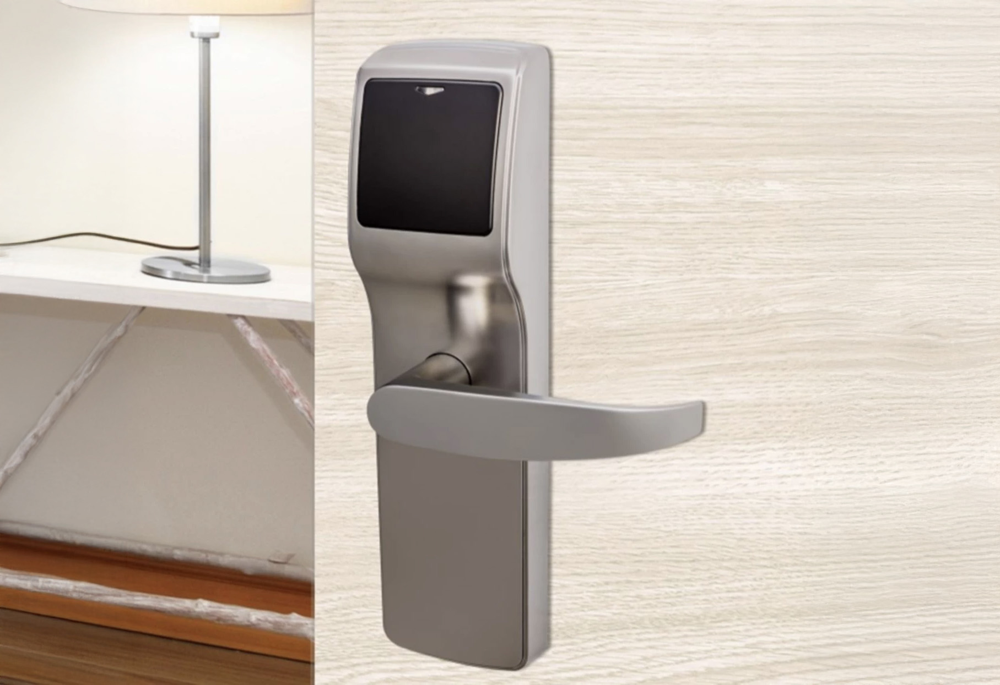
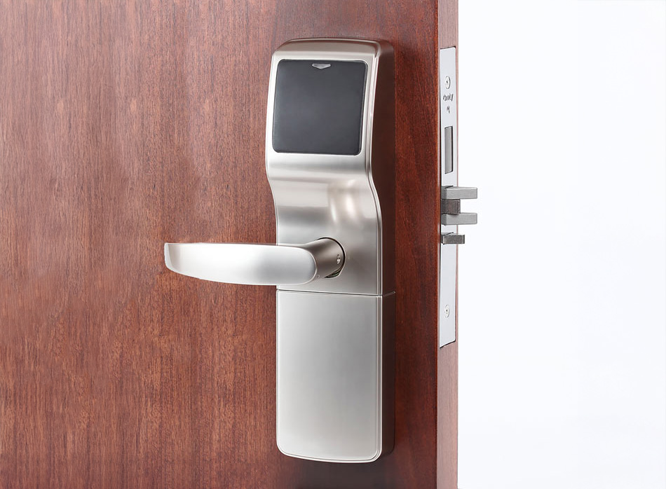

La serie Trillium de Onity combina un diseño fino y elegante con la versatilidad necesaria para el entorno hotelero moderno. Esta cerradura de proximidad RFID destaca por su capacidad de adaptarse estéticamente a cualquier instalación, ofreciendo una solución robusta y tecnológicamente avanzada que permite el uso de diversos dispositivos de apertura como tarjetas, pulseras o llaveros, además de la opción de acceso móvil mediante DirectKey.
Diseñada pensando en la continuidad operativa, la serie Trillium facilita enormemente los procesos de renovación hotelera. Estas cerraduras están específicamente concebidas para permitir una reposición sencilla de modelos anteriores de la serie HT de Onity. Gracias a este sistema, los hoteles pueden actualizar sus instalaciones sin incurrir en trabajos adicionales de pintura o modificaciones estructurales en las puertas, optimizando así los tiempos y costes de cualquier proyecto de reforma.


La seguridad es el pilar central de la serie Trillium, la cual integra tecnología MIFARE Plus para elevar la protección de las credenciales de los huéspedes. Además de su seguridad avanzada, el sistema ofrece una flexibilidad operativa excepcional, permitiendo configuraciones personalizadas según las necesidades del establecimiento. Para garantizar un control total, cada cerradura incluye una memoria no volátil que registra las últimas 500 aperturas, incluyendo detalles críticos como fecha, hora y el usuario que accedió, asegurando así un seguimiento exhaustivo y fiable.